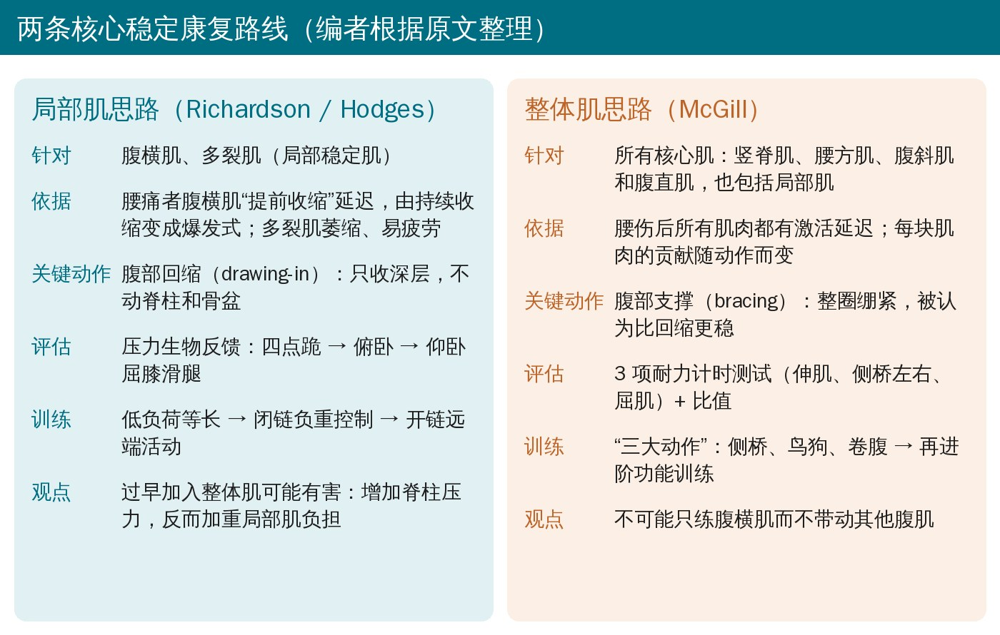
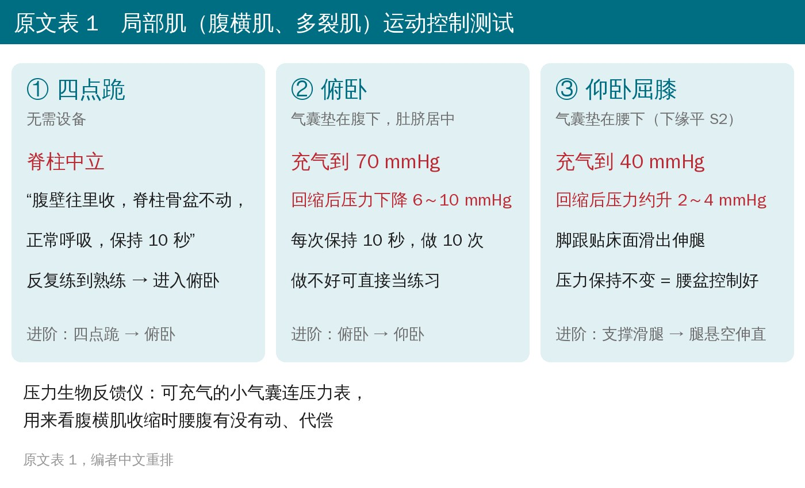
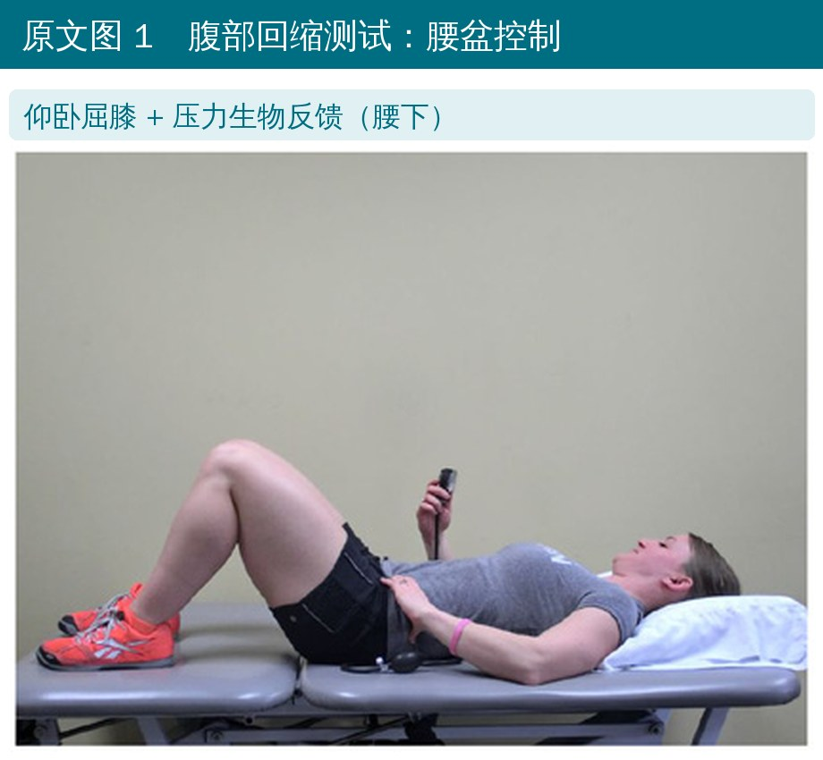
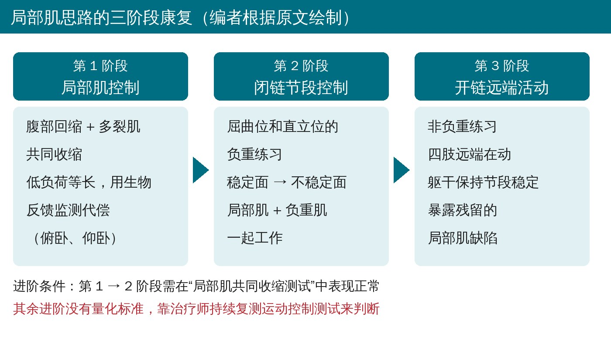
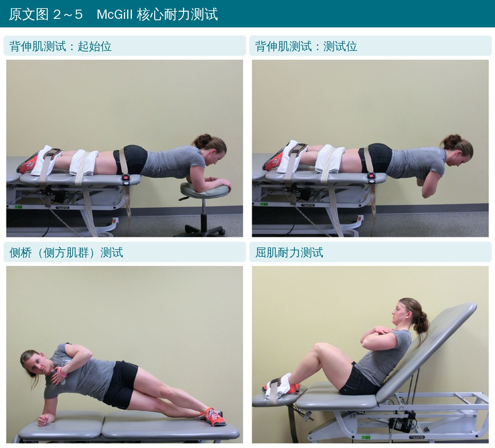
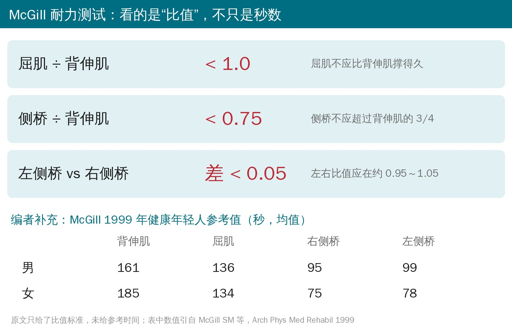
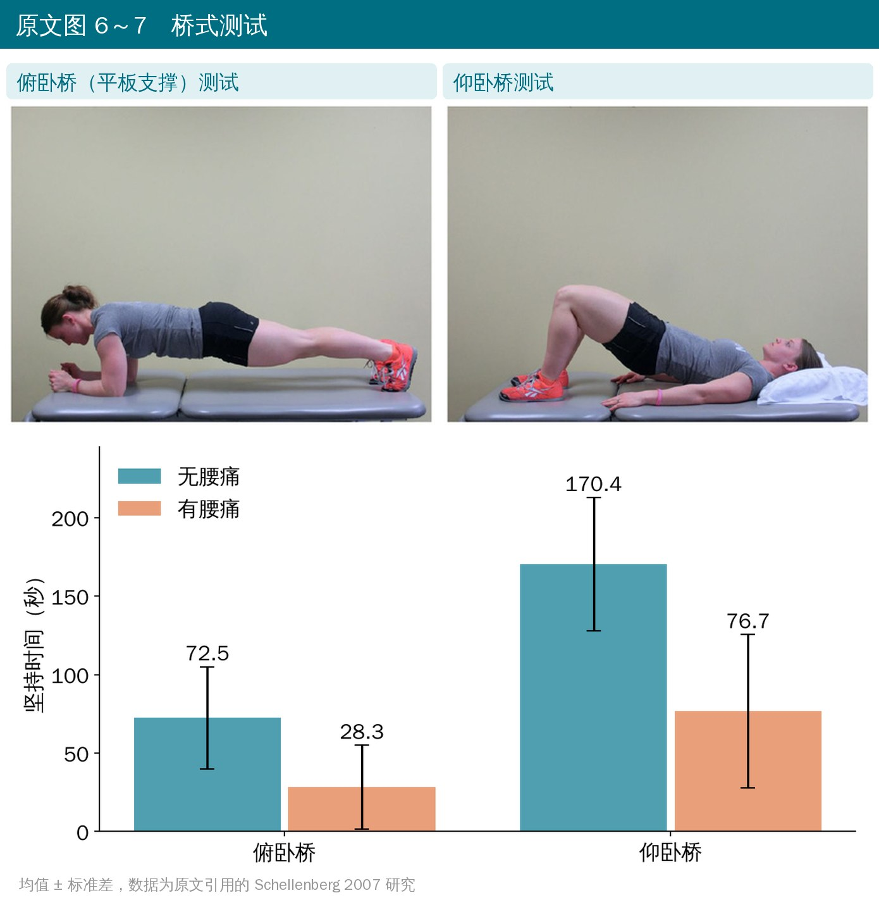

🔖原文信息（编者中文重排）
📚 文献信息
▪ Brumitt J, Matheson JW, Meira EP. Core Stabilization Exercise Prescription, Part I: Current Concepts in Assessment and Intervention. Sports Health. 2013;5(6):504-509.
▪ 作者来自美国太平洋大学（俄勒冈）物理治疗学院等
▪ 临床综述（检索 MEDLINE、CINAHL，1966—2013 年 3 月）；DOI：10.1177/1941738113502451
运动员腰痛，“练核心”几乎是标配。但“核心”到底练什么、怎么评估，一直有两派：一派盯着深层的腹横肌和多裂肌（Richardson、Hodges 的运动控制路线），一派主张所有核心肌一起练（McGill 的整体路线）。
这篇上篇不做裁判，而是把两派各自的评估方法和训练流程讲清楚，外加两个门诊里很好用的桥式测试。对临床最有用的是：每一步测什么、怎么测、达到什么标准再往下走。

🔖两条核心稳定康复路线
• 核心：腹部、脊柱、骨盆和髋的肌肉与关节。它们一方面保护脊柱免受有害外力，另一方面负责在身体各节段之间产生和传递力量，比如投手从下肢蹬地到上肢出手
• 稳定：减少关节面之间异常或过度、会引起症状的位移
• “功能性腰椎节段不稳”：X 线上不一定能看到节段过度移位，但因为韧带约束不够 + 肌肉激活差，在正常负荷下也守不住节段的位置；这类症状可能对稳定训练有反应
• 局部肌：腹横肌、多裂肌；整体肌：竖脊肌、腰方肌、腹斜肌、腹直肌
• 慢性腰痛的人，四肢一动之前腹横肌本该提前收缩，这个提前量变迟了
• 腹横肌的收缩还从持续性变成爆发式，变得只在快速动作时才收缩，并且像其他腹肌一样受动作方向影响
• 多裂肌更容易疲劳、向心激活变低、出现萎缩和结构改变
先给患者讲清楚核心肌的解剖和作用，再教腹部回缩：把腹壁往里收，激活深层的局部肌，但不让表浅的整体肌参与，脊柱和骨盆不动。先在四点跪位练，再到俯卧和仰卧位用压力生物反馈仪检查。

🔖原文表 1 三项运动控制测试

🔖原文图 1 仰卧屈膝滑腿测试（压力生物反馈仪垫在腰下）
• 四点跪：口令“腹壁往里收，脊柱骨盆不动，正常呼吸，保持 10 秒”，反复练到熟练
• 俯卧：气囊放腹下、肚脐居中，充到 70 mmHg；回缩后压力降 6～10 mmHg 算成功；每次 10 秒、做 10 次，看耐力。做不好就把它直接当成练习
• 仰卧屈膝：气囊放腰下（下缘平第 2 骶椎），充到 40 mmHg，回缩后约升 2～4 mmHg；然后脚跟贴着床面把腿滑直，压力保持不变，说明能在四肢活动时稳住腰盆；再难一点就把腿悬空伸直

🔖局部肌路线的三阶段
• 第 1 阶段 局部肌控制：俯卧、仰卧的低负荷等长练习，配合生物反馈，盯住代偿；做熟了可以进阶到桥式、鸟狗
• 第 2 阶段 闭链节段控制：屈曲位和直立位的负重练习，先稳定面、再不稳定面，局部肌和负重肌一起工作。进入条件：局部肌共同收缩测试正常
• 第 3 阶段 开链远端活动：非负重练习，四肢远端动、躯干保持节段稳定，用来暴露残留的局部肌问题
• 最后加入大负荷功能动作，局部肌与整体肌共同收缩
• 这一派的原则：每个练习都先做腹部回缩；过早加入整体肌可能有害——局部肌更擅长对抗剪切力，整体肌过度激活会给脊柱额外压力
McGill 的观点正相反：腰伤后所有肌肉都有激活延迟，而且每块肌肉对稳定的贡献随动作变化；想单独激活腹横肌而不带动其他腹肌，根本做不到；整圈绷紧的“腹部支撑”比“腹部回缩”更能增加稳定。

🔖原文图 2～5 背伸肌、侧桥、屈肌耐力测试
• 背伸肌测试：俯卧，髂前上棘以下固定在床上（绑带或测试者压住），上身悬空、先用手撑椅子；开始时上身与地面平行、双臂抱胸，计时到撑不住
• 侧桥测试（左右各一次）：肘屈 90° 撑在肩正下方，双腿伸直与躯干成一线、上面的脚放在下面的脚前方，另一只手搭对侧肩；撑不住即停
• 屈肌测试：靠在与床面成 60° 的靠垫上，双臂抱胸，屈髋屈膝 90°（脚固定）；把靠垫往后撤 10 cm 开始计时，背碰到靠垫即停

🔖看比值：判断核心耐力是否失衡
关键不是秒数本身，而是比值：屈肌/背伸肌 < 1.0，侧桥/背伸肌 < 0.75，左右侧桥差 < 0.05。受伤的运动员通常至少有一项失衡。
• McGill 的“三大动作”：侧桥、鸟狗、卷腹
• 耐力提高、比值恢复平衡后，再进阶到核心的功能性训练
• 原文只列出了动作名称，没有给具体剂量和做法
有些患者症状太重，摆不出 McGill 测试的体位；腹横肌、多裂肌的测试又测不出耐力。这时可以用俯卧桥（平板支撑）和仰卧桥做门诊评估：

🔖原文图 6～7 与引用数据
• 俯卧桥：无腰痛 72.5 ± 32.6 秒，有腰痛 28.3 ± 26.8 秒
• 仰卧桥：无腰痛 170.4 ± 42.5 秒，有腰痛 76.7 ± 48.9 秒
• 这是叙述性综述，不是系统综述：虽然写了检索数据库，但没有纳入标准、没有质量评价，也没有比较两派的疗效
• 大量依据来自两本教材（Richardson 1999、McGill 2007），而不是临床试验
• 局部肌路线的阶段进阶“没有量化标准”，原文自己也承认要靠治疗师判断
• McGill 测试只给了比值标准，没有给参考时间；“三大动作”没有剂量
原文里对不上的地方：
• “不可能在其他腹肌参与的情况下激活腹横肌”——按 McGill 的原意应该是“不可能只激活腹横肌而不带动其他腹肌”，原文意思写反了
• 仰卧桥的数据（170.4 秒 vs 76.7 秒）引用的是参考文献 22（Richardson 的教材），但俯卧桥和仰卧桥两组数据都出自 Schellenberg 2007（参考文献 26），应为引用错误
• 左右侧桥“差 < 0.05”表述含糊：McGill 原文指左右比值偏离 1 不超过 0.05，原文没说清楚是比值还是秒数
• 参考文献 23 作者写成“Richardson C, Hodges PW, Hides J, Richardson C”，Richardson 重复出现；参考文献 14（相邻节段病变的分类）与“功能性节段不稳”的论述不太相关
• 先评估、再选路线：腹部回缩做不好、仰卧滑腿压力守不住 → 先走局部肌控制；耐力比值明显失衡 → 先用三大动作补耐力
• 压力生物反馈的几个数字很实用：俯卧 70 mmHg 降 6～10，仰卧 40 mmHg 滑腿不掉压
• McGill 三项测试看比值不看绝对秒数，左右侧桥差别、屈肌是否超过背伸肌，往往比总时间更能说明问题
• 症状重、摆不了体位的人，用俯卧桥/仰卧桥先粗筛
• 两派并不完全对立：局部肌路线最后也要加入大负荷、局部和整体肌共同收缩；可以按患者当前能力选择起点
原文表 1 局部肌（腹横肌、多裂肌）运动控制测试
| 测试 | 做法 |
|---|---|
| 四点跪位腹部回缩测试 | 口令：“腹壁往里收，脊柱和骨盆不动，正常呼吸，保持 10 秒。”反复练到掌握；患者在这个体位表现熟练后，进阶到俯卧测试 |
| 俯卧位腹部回缩测试 | 俯卧，用压力生物反馈仪评估腹横肌收缩：气囊中心对准肚脐，充气至 70 mmHg。做腹部回缩，成功时压力下降 6～10 mmHg，每次保持 10 秒。Richardson 建议做 10 次以评估耐力。表现差或耐力不足时，可直接把这个测试当作练习 |
| 腹部回缩测试：腰盆控制（图 1） | 仰卧屈膝（屈髋屈膝、脚踩床面）。气囊放在腰下（下缘平第 2 骶椎），充气至 40 mmHg。做腹部回缩，压力通常升高 2～4 mmHg。然后脚跟沿床面滑动、把腿伸直，压力保持不变说明具备一定的腰盆控制（四肢活动时稳住躯干与骨盆）。可进一步做无支撑的伸腿来加大难度 |
原文表 2 核心耐力测试
| 测试 | 做法 |
|---|---|
| 背伸肌测试（图 2、3） | 俯卧在治疗床上，下半身用绑带或测试者体重固定；上身从髂前上棘以上悬空，开始前双手撑在椅子上。患者摆出测试姿势（上身与地面平行、双臂抱胸）时开始计时 |
| 侧方肌群测试（图 4） | 一侧肘屈 90° 撑在肩正下方，双腿伸直与躯干成一线，一只脚放在另一只脚前方；不负重的手放在对侧肩上。无法保持姿势时停止 |
| 屈肌耐力测试（图 5） | 靠在与床面成 60° 的靠垫上，双臂抱胸，髋膝各屈 90°。把靠垫向后撤离背部 10 cm 时开始计时，背部碰到靠垫时停止 |
欢迎关注骨科康复小黄公众号，获取更多物理治疗的专业知识！
📄参考文献：
Brumitt J, Matheson JW, Meira EP. Core Stabilization Exercise Prescription, Part I: Current Concepts in Assessment and Intervention. Sports Health. 2013;5(6):504-509. doi:10.1177/1941738113502451
McGill SM, Childs A, Liebenson C. Endurance times for low back stabilization exercises: clinical targets for testing and training from a normal database. Arch Phys Med Rehabil. 1999;80:941-944.（编者补充参考值来源）
原文版权归作者与 SAGE 出版社所有，非知识共享协议开放获取。本文仅为学术交流用的中文解读，照片引自原文图 1～7，示意图与图表为编者中文绘制，表格为编者翻译，如有侵权请联系删除。